Relocations
Relocations (sometimes called fix-ups) are part of a process by which the Code Fragment Manager replaces references to code and data with actual addresses at runtime. The loader section contains information on how to perform these relocations. These relocations apply to any symbols accessed via pointers, such as imported code and data, or a fragment's own pointer-based function calls.By the very nature of pointer-based references, you cannot know the actual address that a pointer refers to at build time. Instead, the compiler includes placeholders than can be fixed up by the Code Fragment Manager at preparation time.
For example, a reference to an imported routine points to a transition vector. Before preparation, the pointer in the calling fragment that points to the transition vector has the value
0. After instantiating the called fragment at preparation time, the actual address of the transition vector becomes known. The Code Fragment Manager then executes a relocation instruction that adds the address of the transition vector to the pointer that references it. The pointer then points to the transition vector in the called fragment's data section.Relocation information is stored in PEF containers using a number of specialized instructions and variables, which act much like machine-language instructions for a pseudo-microprocessor. These elements reduce the number of bytes required to store the relocation information and reduce the time required to perform the relocations.
The pseudo-microprocessor maintains state information in pseudo-registers. For the state to be correct for each instruction, relocation instructions must be executed in order from start to finish for each section.
The relocation instructions make use of the variables shown in Table 8-4. The initial values are set by the Code Fragment Manager prior to executing the relocations for each section.
The relocation instructions themselves generally accomplish one of the following functions:
- Note
- The
sectionCandsectionDvariables actually contain the memory address of an instantiated section minus the default address for that section. The default address for a section is contained in thedefaultAddressfield of the section header. However, in almost all cases the default address should be0, so the simplified definition suffices.
- assign a value to one of the relocation variables
- add an imported symbol's address to the current location (pointed to by
relocAddress), then incrementimportIndexandrelocAddress- add the
sectionCvalue to the current location, then incrementrelocAddress- add the
sectionDvalue to the current location, then incrementrelocAddress- add the
sectionCvalue to the current location and incrementrelocAddress, then add thesectionDvalue to the new current location, and incrementrelocAddressagainThe Relocation Headers Table
If an instantiated section requires one or more relocations, it has an entry in the relocation headers table. A header entry data structure is of fixed size (12 bytes) and has the form shown in Listing 8-5.Listing 8-5 Relocation header entry data structure
struct PEFLoaderRelocationHeader { UInt16sectionIndex; UInt16reservedA; UInt32relocCount; UInt32firstRelocOffset; };The header fields are as follows:Note that the
- The
sectionIndexfield (2 bytes) designates the section number to which this relocation header refers.- The
reservedAfield (2 bytes) is currently reserved and must be set to0.- The
relocCountfield (4 bytes) indicates the number of 16-bit relocation blocks for this section.- The
firstRelocOffsetfield (4 bytes) indicates the byte offset from the start of the relocations area to the first relocation instruction for this section.relocCountfield is the number of 16-bit relocation blocks (that is, one half the total number of bytes of relocation instructions). Although most relocation instructions are 16 bits long, some are longer, so the number of complete relocation instructions may be less than therelocCountvalue.The Relocation Area
The relocation area consists of a sequence of relocation instructions that describe how to fix up pointers to the fragment's own code and data and to imported symbols during the preparation process. These instructions are grouped by section number, and they are accessed through the relocation headers described earlier. See "Relocation Instruction Set" (page 8-27) for a detailed description of the relocation instructions.A Relocation Example
This section gives an example of how various relocation instructions are used. In this example, a fragment calls the imported routinemoo. At build time, all pointers tomooin the calling fragment are set to0, since the compiler or linker cannot know the actual runtime address of the routine. Similarly, in the fragment that containsmoo, the transition vector formoocontains only offset values for the location of its code and its data world. Figure 8-9 shows the unprepared state for the two fragments.Figure 8-9 Unprepared fragments
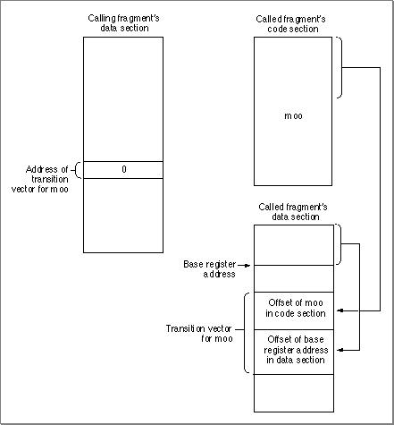
After instantiating both fragments, the Code Fragment Manager fixes up the calling fragment's pointer by executing instructions as follows (see Figure 8-10):
Figure 8-10 Relocations for the calling fragment
- Set
relocAddressto point to the data pointer formoo.- Set
importIndexto select the imported symbol entry formoo.- Execute a relocation instruction that adds the address of the imported symbol
moo(that is, the address of its transition vector) to the 4 bytes atrelocAddress.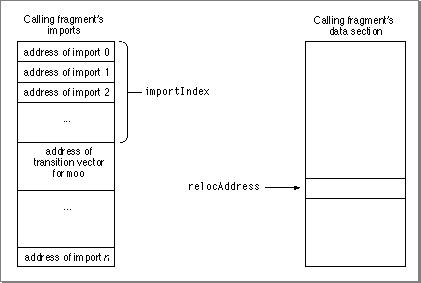
After being fixed up, the calling fragment's pointer now points to the transition vector for
moo.The pointers for the called fragment are fixed up as follows (see Figure 8-11):
Figure 8-11 Relocations for the called fragment
- Set
relocAddressto point to the beginning of the transition vector formoo.- Set
sectionCto point to the beginning of the code section containingmoo.- Set
sectionDto point to the beginning of the called fragment's data section.- Execute a relocation instruction that adds
sectionCto the contents of the location pointed to byrelocAddress; incrementsrelocAddress(4 bytes); addssectionDto the contents of the location pointed to by the newrelocAddress; and incrementsrelocAddressagain.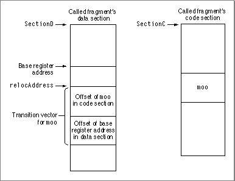
After being fixed up, the transition vector for
moonow contains the actual address ofmooand the base register address for its data world. The routinemoois now prepared for execution.Relocation Instruction Set
Relocation instructions are stored in 2-byte relocation blocks. Most instructions take up one block that combines an opcode and related arguments. Instructions that are larger than 2 bytes have an opcode and some of the operands in the first 2-byte block, with other operands in the following 2-byte blocks. The opcode occupies the upper (higher-order) bits of the block that contains it. Relocation instructions can be decoded from the high-order 7 bits of their first block. Listing 8-6 shows the high-order 7 bits for the currently defined relocation opcode values. Binary values indicated by "x" are "don't care" operands. For example, any combination of the high-order 7 bits that starts with two zero bits (00) indicates the RelocBySectDWithSkip instruction.All currently defined relocation instructions relocate locations as words (that is, 4-byte values).
Listing 8-6 Relocation opcode values
enum { kPEFRelocBySectDWithSkip= 0x00,/* binary: 00xxxxx */ kPEFRelocBySectC = 0x20, /* binary: 0100000 */ kPEFRelocBySectD = 0x21, /* binary: 0100001 */ kPEFRelocTVector12 = 0x22, /* binary: 0100010 */ kPEFRelocTVector8 = 0x23, /* binary: 0100011 */ kPEFRelocVTable8 = 0x24, /* binary: 0100100 */ kPEFRelocImportRun = 0x25, /* binary: 0100101 */ kPEFRelocSmByImport = 0x30, /* binary: 0110000 */ kPEFRelocSmSetSectC = 0x31, /* binary: 0110001 */ kPEFRelocSmSetSectD = 0x32, /* binary: 0110010 */ kPEFRelocSmBySection = 0x33, /* binary: 0110011 */ kPEFRelocIncrPosition= 0x40, /* binary: 1000xxx */ kPEFRelocSmRepeat = 0x48, /* binary: 1001xxx */ kPEFRelocSetPosition = 0x50, /* binary: 101000x */ kPEFRelocLgByImport = 0x52, /* binary: 101001x */ kPEFRelocLgRepeat = 0x58, /* binary: 101100x */ kPEFRelocLgSetOrBySection= 0x5A,/* binary: 101101x */ };The following sections describe the individual instructions in more detail.
- IMPORTANT
- If you wish to create your own relocation instructions, the 3 highest order bits must be set (
111xxxx) to indicate a third-party opcode. All other undocumented opcode values are reserved.RelocBySectDWithSkip
TheRelocBySectDWithSkipinstruction (opcode 00) has the structure shown in Figure 8-12.Figure 8-12 Structure of the
RelocBySectDWithSkipinstruction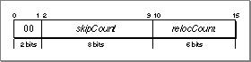
This instruction first increments
relocAddressby skipCount * 4 bytes. It then adds the value ofsectionDto the next relocCount contiguous words. After the instruction is executed,relocAddresspoints just past the last modified word.The Relocate Value Group
Instructions in the Relocate Value group of opcodes all begin with010and have the structure shown in Figure 8-13.Figure 8-13 Structure of the Relocate Value opcode group
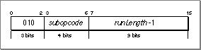
Instructions in this group add a value to the next runLength items starting at address
relocAddress. The subopcode indicates the type and size of the items to be added as shown in Table 8-5. After execution,relocAddresspoints to just past the last modified item.
- IMPORTANT
- The value stored in this instruction is one less than the actual run length (runLength-1).

The Relocate By Index Group
Instructions in the Relocate By Index group all begin with011and have the structure shown in Figure 8-14.Figure 8-14 Structure of the Relocate By Index opcode group
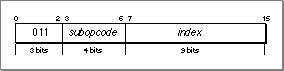
Instructions in this group fix up values according to the subopcode values shown in Table 8-6.
RelocIncrPosition
TheRelocIncrPositioninstruction (opcode 1000) has the structure shown in Figure 8-15.Figure 8-15 Structure of the
RelocIncrPositioninstruction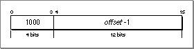
This instruction increments
relocAddressby offset bytes. The value of offset is treated as an unsigned value.
- IMPORTANT
- The value stored in this instruction is one less than the actual offset (offset-1).
RelocSmRepeat
TheRelocSmRepeatinstruction (opcode 1001) has the structure shown in Figure 8-16.Figure 8-16 Structure of the
RelocSmRepeatinstruction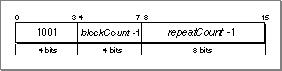
This instruction repeats the preceding blockCount relocation blocks repeatCount number of times. Note that you cannot nest this instruction within itself or within the
RelocLgRepeatinstruction.
- IMPORTANT
- The values of blockCount and repeatCount stored in this instruction are one less than the actual values.
RelocSetPosition
TheRelocSetPositioninstruction (opcode 101000) takes two relocation blocks (4 bytes) rather than the usual one; the extra bytes allow you to specify an unsigned offset parameter of up to 26 bits.The
RelocSetPositioninstruction has the structure shown in Figure 8-17.Figure 8-17 Structure of the
RelocSetPositioninstruction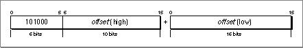
This instruction sets
relocAddressto the address of the section offset offset.RelocLgByImport
TheRelocLgByImportinstruction (opcode 101001) takes two relocation blocks (4 bytes); the extra bytes allow you to specify an unsigned index parameter of up to 26 bits.The
RelocLgByImportinstruction has the structure shown in Figure 8-18.Figure 8-18 Structure of the
RelocLgByImportinstructionThis instruction adds the address of the imported symbol whose index is held in index to the word pointed to by
relocAddress. After the addition,relocAddresspoints to just past the modified word, andimportIndexis set to index +1.RelocLgRepeat
TheRelocLgRepeatinstruction (opcode 101100) takes two relocation blocks and has the structure shown in Figure 8-19.Figure 8-19 Structure of the
RelocLgRepeatinstruction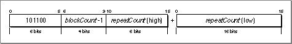
This instruction repeats the preceding blockCount relocation blocks repeatCount number of times. The
RelocLgRepeatinstruction is very similar to therelocSmRepeat(opcode 1001) instruction, but it allows for larger repeat counts.You cannot nest this instruction, either within itself or within the
relocSmRepeatinstruction.
- IMPORTANT
- Note that the repeat value stored in this instruction is the actual value (repeatCount), while for the
relocSmRepeatinstruction the value stored is repeatCount-1. The block count value stored is blockCount-1 for both repeat instructions.RelocLgSetOrBySection
TheRelocLgSetOrBySectioninstruction (opcode 101101) takes two relocation blocks and has the form shown in Figure 8-20.Figure 8-20 Structure of the
RelocLgSetOrBySectioninstruction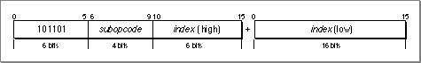
This instruction performs instructions identical to those shown in "The Relocate By Index Group" (page 8-31), but with a larger (up to 22-bit, unsigned) section number. The action specified depends on the value of subopcode as shown in Table 8-7.